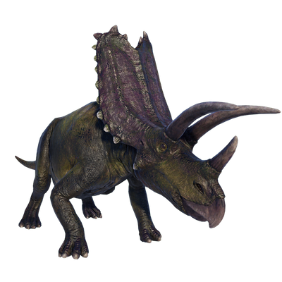

Useful Website
Pentaceratops is a relative of the more famous Triceratops, and bears a strong resemblance to its cousin – although, as the name (which translates to ‘five-horned face’) suggests, it has five horns instead of three. This genus can grow up to 7m in length and weighs in excess of five tonnes, and has an eye-catching frill protruding from the back of its skull that helps it to attract a mate.
